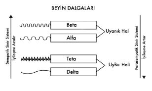

“ALGI” DEĞİŞTİĞİNDE HİSLER DE DEĞİŞİR...
Algı, beyin dalgasına göre değişir...
Baktığın her şey senin algınla ilgilidir?
“Ama ben neresinden bakarsam bakayım kötü olaylar da var Metin!” diyebilirsin bana...
Sorun yok!
Meslek hayatım boyunca bu tür savunmalarla sürekli karşı karşıya kaldım.
Aslında haklısın! Kötü olaylar da var; çünkü sen onları kötü algılıyorsun!
Geçtiğimiz hafta Antalya’ya gittiğim uçakta, yanıma oturan kadının uçmakla ilgili ciddi endişeleri vardı. Koltuğa oturduğu andan beri sürekli yüreği ağzında, panik ve telaş içindeydi. Uçak her titrediğinde neredeyse bayılma noktasına geliyordu. Bense gayet sakin ve iyi bir yolculuk yaptığımızı düşünüyordum çünkü bir iki küçük türbülans dışında neredeyse gökyüzünde süzülürcesine seyahat ediyorduk. İkimiz de aynı uçağın içinde olduğumuz halde, yanımda oturan kadınla yaşadığımız deneyim tamamen birbirinden farklıydı.
Sence ikimiz için de bütün veriler ve koşullar aynıyken benim için eğlenceli olan yolculuğu, bu kadın için çekilmez kılan şey neydi?
Beni anladığını biliyordum...
Evet...
Doğru cevap: “Algı.”
Kadın oldukça yüksek bir beyin dalgasıyla uçağa binmişti ve yaşadığı her titremeyi bir felaketin habercisi olarak algılıyordu.
Bazı insanlara küçücük bir yorumda bulunduğun halde kocaman ve şiddetli tepkiler alırsın. Mesela ona laciverdin yakışmadığını, bunun yerine maviyi denemesini önerdiğinde seninle kavgaya tutuştuğu gibi belki küsüp gidenler bile vardır.
Sence sorun gerçekten lacivertte midir?
Bence de değil...
Problem tamamen o kişinin algı biçimindedir! Betada kaldığı sürece olumsuz, kaygılı ve stresli hissedip sürekli saldırıya maruz kaldığını düşüneceğinden, doğal olarak tepkileri de hislerinden farklı olmayacaktır.
“En azılı düşmanın da, en gerçek dostun da;
senin teninin altında saklıdır...”
Betadaki insanlar her veriyi, kendilerine yönelik bir saldırı olarak algılarlar: Sürü hayvanları, çalıların ardında bir yırtıcı gördüğünde derhal beyinleri “beta”ya geçer. Yırtıcı tehlikesi ortadan kalktığında dahi, bu hayvanlar hemen rahatlayamazlar. Sürü hayvanları uzun süre etrafa bakınıp her an bir çalının ya da ağacın arkasından yeni bir yırtıcının belirebileceği ihtimaliyle tetikte kalmayı sürdürürler. Huzursuzlukla etrafta dolaşıp, algılarını küçük bir çıt sesine dahi açık hassasiyette tutarlar.
Beta beyin dalgasındaki bir zihin, olumsuzluğa ve tehlikeye fazlasıyla odaklı olduğundan, her olasılığın içinde negatif senaryolar aramaya devam eder. Betadaki insanlar, hayatlarındaki her olguyu kendilerine yönelik bir saldırı olarak algılarlar, baktıkları her yerde ve her şeyde korkuyla ilgili veriler ararlar. Genelde negatif ve mutsuz olduklarından etraflarında olan bitenin de negatif ve mutsuz taraflarını kolayca yakalayıp ortaya koymayı iyi becerirler.
Bir gün arkadaşımla dondurmacıda sıra beklerken, önümde duran bir adam eşine doğru yönelerek “Canım çikolatalı mı istersin, karamelli mi?” diye sordu. Bu soruyu duyan kadın birdenbire avazı çıktığı kadar “Sen bunca yıldır benim nasıl dondurma yediğimi bilmiyor musun? Ben ne zaman karamelli dondurma yedim ki?” diye bağırmaya başladı. Olayı izleyip arkadaşıma döndüm ve ona “Olay dondurma değil aslında” dedim. Muhtemelen kadın zaten çok gergindi. Betadaki kişiler, pimi çekilmiş bombalar gibi ortalıkta dolaşan insanlardır.
Meslektaşım da olan bir arkadaşımla katıldığımız tıp kongresi sonrasında Çapa Tıp Fakültesi’nden eski bir hocamızla rastlaştık. Hocam beni gördüğünde yanağımdan makas alarak espri yaparken, aynı makası yanımdaki arkadaşımın yanağından da aldı. Kısa ve keyifli sohbetimizin ardından ben, sıcak ve güzel duygularla doluyken, yanımdaki arkadaşımın burnundan soluduğunu fark edince neler olduğunu sordum. Arkadaşım yanağından makas alınmasından çok rahatsız olmuş ve “Biz artık onun öğrencisi falan değiliz. Yanaktan makas almak da ne demek şimdi? Ben onun meslektaşıyım. Bu ne lakaytlık böyle!” diyerek söyleniyordu.
Aynı tepkiye maruz kaldığımız halde ben alfada olduğum ve saldırıya uğradığımı düşünmediğim için bu karşılaşmadan da, yanağımdan makas alınmasından da gayet hoşnutken, arkadaşımsa beta beyin dalgasında yarattığı olumsuz algı biçiminden dolayı, kendisini hakarete ve saldırıya uğramış hissediyordu.
Hayatın boyunca sana yönelik saldırılar olarak kabul ettiğin bütün olaylara, eğer bir adım daha geriden bakmayı denersen, aslında hiçbirinin “saldırı” olmadığını fark edeceksin.
“Hayat, zihninde yaşanan holografik bir evrenden ibarettir...”
Mesela o gün senin için dünyanın en güzel günü çünkü âşık olmuşsun. Trafikte arabanın içinde ilerlerken önündeki aracın trafik kurallarını ihlal ettiğini görüp sana karşı da kaba davrandığını görüyorsun farz edelim... Böyle bir durumla karşı karşıya kalsaydın ne yaparsın? Tabii ki hiç sinirlerini bozmadan “Aman boş ver” deyip yoluna keyifle devam ederdin.
Bir de durumun tersini düşünelim. O gün yola çıkarken çok gergindin diyelim. Evden çıkarken de kavga etmişsin, keyfin yok. Yine aynı araç önünde giderken seni rahatsız edip trafik kurallarını ihlal ediyor. Bu kez ona karşı tepkin ne olurdu? Büyük ihtimalle el frenini çekip arabandan aşağı inerek, karşı aracın şoförüne saldıracaksındır.
Unutma:
Algın değişirse hislerin değişir; hislerin değişirse tepkilerin değişir ve tepkilerin değişirse deneyimin değişir...
Yaşam; deneyim denen bütün anların
uç uca dikilip birleştirilmiş halidir!
Benimle çıktığın yolculukta algılarına güvenmemen gerekiyor!
Gayet doğru anladın!
Algılarına güvenme!
Gün boyunca ay vardı ve gece boyunca da güneş...
Ama sen onları görebildin mi?
İnsan, “var” olanı yaşamaz!
Yaşadığı her şey zihninin içinde, kendi algıladığı ve kurguladığı gibidir.
Yeryüzünde hepimiz sadece “var” olanı yaşıyor olsaydık, aynı duruma baktığımızda kimse farklı yorumlarda bulunuyor olmazdı.
Eğitimlerime katılanlar bana baktıklarında karşılarında hayatı anlatan olgun bir adam görüyorlardır. Lakin aynı bana bakan annem ne görüyor biliyor musun? Altını temizleyip karnını doyurduğu, kızıl saçlı, çilli, küçük oğlunu görüyor. Aynı bana bakan kız arkadaşım karşısında sevişmek istediği adamı bulurken, yine aynı bana bakan düşmanım belki ağzını burnunu kırıp dağıtmak istediği adama bakıyordur.
Bu insanların her birine benden aynı bit veriler gittiğine göre, her birinin benimle ilgili farklı duygular deneyimlemelerinin sebebi nedir?
Tabii ki; yaşanan farkı, “algı” biçimleri yaratıyor!
Benimle ilgili algıları farklı olduğundan, doğal olarak her biri bana karşı başka hisler duyuyor. Dolayısıyla her biri bu hislerine göre tepkiler veriyor ve sonuç olarak her biriyle yaşadığım deneyim yine birbirinden çok farklı...
Şunu her zaman hatırla lütfen:
Keramet onda değil, senin onun hakkında hissettiklerindedir.
1- ALFA BEYİN DALGASI: Hazzın, keyfin ve mutluluğun olduğu beyin dalgasıdır. Alfa kaliteli yaşamın başladığı noktadır aynı zamanda. Düşünce gücünün ortaya çıktığı, ruhani yeteneklerin ifade bulduğu ve bedensel hislerin gölgelenip baskılanmadığı bir beyin dalgasıdır. Saniyede 9 Hz ila 14 Hz devir yapar.
Betada, yaşamda kalma korkusu varken, burada artık yaşamın kendisi vardır. Alfadayken keyif alır, eğlenir, güvende hisseder ve mutluluk duyarsın. Yaptığın her şeyin senin için bir anlamı, güzelliği ve lezzeti vardır.
Alfa beyin dalgasında, zihnindeki düşünceler silsilesi azalmıştır, AN’ın farkında ve hazzındasındır.
Diğer adı uyku öncesi hal, “vecit” ya da meditatif hal olan alfa beyin dalgası, kendini iyi hissettiğin yerdir.
Beyin dalgalarının, alfaya düşmesiyle birlikte uyarılan parasempatik sinir sistemi, serotonin, endorfin, dopamin, noradrenalin, oksitosin gibi 4 ya da 5 majör mutluluk hormonunu tetikleyerek sükûnet, güven ve mutluluk hissini yüksek seviyede deneyimlemeni sağlar.
AŞK’tan sarhoş olduğun ve böyle anlarda kendini nasıl hissettiğini hatırlamaya çalış şimdi...
Mutlu uyandığın, sevgi dolu olduğun, hiçbir şeyi dert etmediğin, çözüm olduğun, çare ürettiğin, sevgili, saygılı, hoşgörülü olduğun, çok güzel veya çok yakışıklı göründüğün o dönemlerde verdiğin tepkilerle; öfke ve stres altındaki cehennem yerinden verdiğin reaksiyonlar sence aynı mı?
Tabii ki aynı değil!
Âşık olduğun, sevgi ve coşkuyla dolup taştığın zamanlar trafikte sana küfredip bağıran insanlara gülümseyip yoluna devam ederken, mutsuz ve telaşlı zamanlarında aynı küfreden kişiye belki levyeyle saldırmaya bile kalkarsın. Bütün veriler aynıyken senin tepkilerini farklı kılan şey ne olabilir?
“Aşk” mı?
Aslında haklısın...
Aşk hissediyorsan “SEVGİ”desindir ve sevginin olduğu yerde korku, kaygı, öfke, mutsuzluk, güvensizlik, geçmiş ya da gelecek yoktur. Şimdi ve şu an içinde tam ve bütünsündür.
Evren söylediğimiz yalanlara göre değil,
hissettiğimiz doğrulara göre şekillenir.
Beyin dalgaların düşük olduğundan algı şeklin de farklıdır. Trafikte işittiğin küfrü bile kendine yönelik bir saldırı olarak almaz, dolayısıyla bu algına göre bir tepki verir ve bambaşka deneyimler yaşarsın.
Sevgi varsa, korku yoktur... Korku varsa, sevgi yoktur!
İkisinin aynı anda olması mümkün değildir, çünkü ışığın olduğu yerde karanlığın barınması imkânsızdır.
Yaşamındaki hiçbir şey için “Hem seviyorum hem korkuyorum” diyemezsin. Korku hissediyorsan betadasındır ve bu stres beyin dalgası içinde kendini güvende, tam ve bütün hissetmen mümkün değildir.
Sevgi duyduğun şeylerle ilgili korku ve kaygı hissetmeye başladıysan, devreye artık zihnin girmiş ve kalbinle kurduğun temas artık zihinle kurduğun bağımlılık ilişkisine dönüşmüştür.
“Korku ağacını sallayarak sevgi meyvesi alamazsın...”
– Hayatım boyunca hep büyük ve gerçek aşklar yaşadım ancak kalbim beni sürekli yanılttı ve üzdü. Metin, hani aşk varsa sevgi vardı ve sevginin olduğu yerde korku bulunmazdı?
– Kalp hiçbir zaman üzmez. O sadece sever... Seni sakın zihnindeki bağımlılık üzmüş olmasın? Şimdi bu konuyu tekrar düşünmeni öneririm.
Kahvaltılarını ya da öğlen yemeklerini hep bir yerlere yetişmek bahanesiyle ağzına tıkıştırıp ayaküstü geçiştirirken, aslında tadını hiç sevmediğin rakıyı akşam arkadaşlarınla rakı-balık sofrasında çok daha keyifle, adapla ve aheste içersin. Burada arzuladığın şey rakının anasonu değildir, tetiklenen mutluluk hormonlarındır.
Aslında hepimiz hayatımız boyunca sadece hormonların peşindeyiz!
Hayır! Espri yapmıyorum...
Hayatımızın her alanında gerçekten sadece hormonları arar dururuz. Birine âşık olurken de, rakı yudumlayıp sohbet ederken de, çikolata kavanozlarına saldırırken, cinsellik yaşarken, yemek yerken de peşinde olduğumuz şey, mutluluk hormonlarımızdır.
Alfa beyin dalgasını yakalayıp, onu yaşayabilmenin derdindeyizdir her zaman...
Betadayken birini görüp ona âşık olduğunu hissettiğinde, bundan giderek zevk almaya başladığında, derdini kederini unutup artık daha çözümcü ve pozitif olup, korkularının yerini huzur ve idealler almaya başladığında, enerjin yükselip kendini çok daha iyi hissettiğinde “SEVGİ”de olduğun için zihin seni “KORKU”dan kovar.
Yaşam akışın içinde, “kötü” hissettiğin noktada yapmak isteyeceğin ilk şey, sana kendini iyi ve mutlu hissettiren o şeyi tekrar geri kazanmak olacaktır. Onu kaybetmemek için artık her şeyini vermeye razı ve deli divane olmaya hazırsındır. Aradığının adı sevgili de olsa, alkol, uyuşturucu, yemek, güç ya da para da olsa peşine düştüğün şey; “alfa beyin dalgasıdır”. Yani hedefin, kendini iyi hissettiğin yeri bulmak ve onu yaşamaktır.
Hepsi bu...
İyi olduğun hissini sadece alfa beyin dalgasında alabilirsin!
Alfada olmayan kişi âşık olamaz!
Betada yaşanan bütün aşklar bağımlılıktır...
Bağımlılıklarından kurtulmadan, varoluşa bağlanamazsın!
Unutma:
Acı içinde bağımlı olduğun her şey seni terk edecektir...
Aşk zihinle yaşayana karmaşa, gönülle yaşayana huzur verir...
- Peki! Ya bizim aşk sanıp da acısını çektiğimiz şey nedir o halde?
- Dışarıdaki kıvılcıma mest olup içerideki güneşe körleşmektir sadece...
Alfa sadece kendini mutlu, iyi ve tam hissettiğin yer değil aynı zamanda bedenin için iyileşmenin de başladığı yerdir.
Bu seviyede bağışıklık sistemi de uyarılır ve bedendeki nöropeptidler (Beyin kimyasalları) kanserli hücrelere hücum ederek muazzam iyileşme sürecini de başlatırlar.
Nöropeptidler Nedir? (Beynin Sakinleştirici Molekülleri): Eskiden beyin, çalışma biçimi bakımından bilgisayara benzetiliyordu. Nöronlar uyarılmayınca bilgi akımı olmuyor, ateşlendiklerindeyse tek bir mesajcı molekül salgılayarak diğer hücreyi uyarıyorlar. Buna bağlı olarak beynin çalışma prensibinin bilgisayarlardaki “0” ya da “1” sistemi gibi olduğu düşünülüyordu. Uzun yıllardır, beyinde hücreler arasındaki iletişimi sağlayan moleküllerin yalnızca “nörotransmitterler” olduğu sanılıyordu. Son yıllarda işlerin bu kadar basit olmadığı, nöronlarda elektrik uyarısının ve beyin kontrolünün yalnızca “nörotransmitterler” yoluyla oluşmadığı anlaşıldı.
Son 30 yıl içerisinde yapılan beyin araştırmalarında, en önemli gelişmelerden biri, “nöropeptid” denen moleküllerin keşfidir. Araştırmacılar ilk olarak beyin hücrelerinin yüzeyinde morfin benzeri moleküllerin bağlandığı bölgeleri buldular. Bunlara “opiat” almaçları deniliyor. Morfin gibi kuvvetli ağrıkesiciler, bu opiat almaçlara yapışarak etkilerini gösteriyor. Daha sonra yapılan araştırmalar beynin içerisinde morfin benzeri maddelerin salgılandığını gösterdi. Uzun aminoasit zincirlerinden oluşan bu büyük protein moleküllerine “nöropeptid” adı verildi. İlk keşfedilen nöropeptid, “kafanın içinde” anlamına gelen “enkefalin”. Enkefalinlerden kısa bir süre sonra bulunan “endorfin” de morfin benzeri bir madde. Nöropeptidler arasında en kuvvetli etkiye sahip olanıysa “dinorfin”.
Nöropeptidler, beynin ağrıkesici, sakinleştirici ve zevk verici moleküllerdir. Herhangi bir olayın hoşumuza gitmesi ya da yiyecek içecek gibi maddelerin bize zevk vermesi, bu morfin benzeri moleküllerin salgılanması sayesinde oluyor. Güzel bir resim gördüğümüzde, hoş bir melodi dinlediğimizde ya da lezzetli bir yemek yediğimizde endorfin, enkefalin ya da dinorfin gibi moleküller, nöronlardaki özel almaçlara yapışarak zevk almamızı sağlıyorlar. Beyin, bir süre sonra belirli aralıklarla salgılanan bu moleküllerin yarattığı zevk duygusuna alışıyor. Bundan sonra vücut, nöropeptid salgılanmasına yol açan maddeyi tüketerek ya da olayı tekrarlayarak bunların beyindeki düzeyini artırmaya çalışıyor. Örneğin, lezzetli bir çikolata ya da hamburgerin damakta bıraktığı lezzet, aslında beyindeki belirli nöropeptidlerin düzeylerinin artmasına bağlı.
Nöropeptidlerin keşfedilmeye başlanmasıyla zihin ile beden arasındaki ilişki bilimsel olarak da anlaşılmaya başlanmıştır. Nöropeptidler sadece beyinde değil, ciltte, bağışıklık sisteminde, kaslarda, salgı bezlerinde ve tüm organlarda bulunurlar. Bu da demek ki biz üzgün olduğumuzda aslında beyin hücrelerimiz, cildimiz, elimiz, midemiz ve bağışıklık sistemimiz de üzgün oluyor! Olumsuz düşüncelerin yol açtığı olumsuz duygular, baskılayıcı salgıları nedeniyle bağışıklık sistemimizi etkileyerek hastalıklara kapı açarken, olumlu düşüncelerin oluşturduğu olumlu duygular ise pırıl pırıl nöropeptidler şeklinde hücrelerimizi sarmalıyorlar ve sağlıklı olma halini destekliyorlar. Nöropeptidlerin genetik kodun da üstünde olduğu düşünülüyor. Yani olumlu düşünen insanlarda genetik bozuklukların görülme şansı azalıyor.
Avustralya’da yapılan bir çalışma stresli zamanlarda salgılanan Nöropeptid Y isimli hormonun, bağışıklık sistemini bozarak kansere karşı direnci azalttığını göstermiştir. Anlatmak istediğim şey, endişe, korku, moral bozukluğu ve stresin en az kimyasal kanserojenler kadar tehlikeli ve zararlı şeyler olduğudur. Araştırmacılar kişilik, stres ve kanser arasında herhangi bir bağ olup olmadığı üzerine çok incelemeler yapmışlardır. Hiçbir bilimsel sonuç, kişinin dış görünüşü, kişiliği ile kanser riski arasında bir gösterge bulamamıştır. Stres ve kanser ilişkisi ile ilgili birçok faktör vardır. Stresin genel olarak vücutta bahsettiğimiz bağışıklık sistemini ve daha birçok başka yeri etkilediği bilinmektedir.
“İyi de Metin ben zaten kanser değilim. Öyle nöropeptidler falan çok da şart değil” diyerek alfa beyin dalgasına olan ihtiyacını görmezlikten gelme lütfen.
Sana her gün kanserli hücre ürettiğini ve gün boyu kanserini yendiğini söylesem bana inanır mısın?
Muhtemelen inanmazsın ama senin neye inandığın, her gün kanseri yendiğin gerçeğini değiştirmez.
Yaşayan her insan ve her memeli günde binlerce kanser hücresi üretiyor ve onları düzenli olarak yeniyor.
Bedeninden salınan nöropeptidler, görev alanlarına göre yayılarak bütün kanserli hücreleri bulup yok ediyorlar ve bunu her gün sürekli olarak tekrarlıyorlar. Lokal tedaviler yapan bu beyin kimyasalları; akciğerlere ayrı, dizlere ayrı, kana ayrı salınımlarla vücuda hücum ederek kanserli hücrelere karşı savaşırlar. Beden böylece yan etkisiz muhteşem bir tedavi uygulamış olur.
Mucize gibi değil mi?
Bence de...
İnsan bedeni yeryüzündeki en gelişmiş ve en kusursuz makinedir!
Bedenin; her gün yaşadığı kanser tecrübesini nasıl düzenli olarak iyileştiriyor biliyor musun?
Doğru tahmin:
Elbette iyileşme alfa ve aşağısındaki beyin dalgalarındayken yaşanıyor. Beden alfadayken kanserli hücrelerle savaşmaya başlıyor. Bu yüzden yetişkinlerden daha uzun ve kaliteli uyuyan çocuklar, yaralandıkları ya da hastalandıkları zaman çok daha hızlı iyileşebiliyorlar. Sürekli stres içinde olan yetişkinlerse yazık ki onlarca antibiyotiğe ve kortizona rağmen kolayca iyileşme gösteremeyebiliyorlar.
Betayla uyarılan sempatik sinir sisteminin hedefi, tehlike karşısında seni stresli ve uyanık tutmakken, alfadaki amaç parasempatik sinir sistemini uyararak senin mutlu, huzurlu ve iyileşmede olmanı sağlamaktır.

Beyin dalgaları yükseldikçe bağışıklık sistemi durup iyileşme sonlanırken, beyin dalgaları düştükçe bağışıklık sistemi çalışıp iyileşmeyi başlatır.
• Sempatik sinir sistemi nedir? Kalbin hareketlerini hızlandırır. Kalbi besleyen damarları daraltır. Bronşları genişletir. Bağırsak hareketlerini yavaşlatır.
Sempatik sinir sistemi omurganın iç tarafının iki yanında yer alan ve birer sıra halinde dizili bulunan sinir düğümlerinden oluşur. Omurganın sırt bölgesinden bel bölgesine kadar uzanan sempatik glangliyonlar sinir hücrelerinin bir topluluğudur. Bir yandan omurilik sinirleri yoluyla omurilikle bağlantı kurarken bir yandan da organlara sempatik sinirler gönderirler.
• Parasempatik sinir sistemi nedir? Kalbin hareketlerini yavaşlatır. Kalbi besleyen damarları genişletir. Bronşları daraltır. Bağırsak hareketlerini hızlandırır.
Parasempatik sinir sisteminde sinirsel düğümler yoktur. Sinirlerini doğrudan doğruya merkezi sinir sistemindeki hücrelerden almaktadır. Bu hücrelerin aksonları merkezi sinir sisteminden ayrıldıktan sonra sinir verdikleri organların içinde ya da yakınlarında bulunan küçük glangliyon hücreleriyle bağlanırlar.
Kalp atımlarını ve beyin dalganı düşürmen sağlıklı ve uzun bir hayat için elzemdir.
Kutsal inançlarda ve İslamiyet’teki bazı hadislerde insanın hayatı boyunca alacağı nefes sayısının belli olduğu, bu sayının dışında ne bir eksik ne de bir fazla soluk almanın mümkün olmadığı söylenir. Bu kutsal saptamalarda aslında vurgulanan bilgi, yaşam boyu alınan nefesin rakamı değil, nefesin ne hızda alınması gerektiğidir. Bahsettiğim hadislerde, aslında kalbi hızlı atan ve sık soluyanın daha kısa yaşayacağı bilgisinin altı çizilir.
Kalbi hızlı atan her memeli az yaşar...
Kalbi yavaş atan her memeli uzun yaşar...
– Metin, ben betaya geçeceğimi hissettiğimde kendime sürekli pozitif telkinler yaptığım halde alfaya geçmeyi neden başaramıyorum sence?
– Çünkü düşündüğün konuyla ilgili o kadar yoğun ve olumsuz düşünceler üretiyorsun ki daha sonra bunları bertaraf etmek için karşılarına antitez olarak pozitif düşünceler koymaya başladığında otomatik olarak düşünce sayın katbekat artmaya başlıyor. Dolayısıyla sonuca baktığında aslında hiçbir şeyin pozitif gelişmediğini görüyorsun. Hayatını olumlamalarla geçiren insanları izlersen, hepsinin bir iki hafta Pollyanna gibi dolaştıklarını ancak daha sonra ani ve derin çöküşler yaşadıklarını görürsün. Uyguladıkları olumlama dopingi yazık ki daha hızlı ve sert düşüşler yaşamalarına neden olur. Şunu hiç unutma; doping yapan her insan sonradan bedeninin ve kaslarının parçalanmasına hazır olmalıdır. Esas olan düşünceleri bastırmak ya da ötelemek değil değiştirmektir...
2- TETA BEYİN DALGASI: Zihnin uyku halidir ve bu beyin dalgasında iyileştirici hücreler çok daha fazladır. Bazen derin meditasyonlarda da yakalanabilen bir dalga boyudur.
Frekansı saniyede 5 Hz ila 8 Hz’dir. Teta dalgaları bastırılmış duygular ortaya çıktığında aktifleşir ve yaratıcılık için ihtiyaç duyulan zihinsel bağlantılar bu sayede kurulur.
3- DELTA BEYİN DALGASI: Frekansı en düşük olan beyin dalgasıdır. Saniyede 1,5 Hz ile 4 Hz arasında gidip gelir ve düzensiz yayılır. Uykunun en derin olduğu saatlerde yaşanan deneyimdir (rem uykusu).
Deltanın bir ileri seviyesi için “koma” hali diyebiliriz. Beyin komadayken gereksiz bütün algılarından sıyrılır ve sadece yaşamsal organlara odaklanır.
İnsan komaya girdiğinde bağışıklık sistemi en üst düzeyde uyarılmıştır!
Beyin bu noktada bedene şunu söylemeye başlar: “Artık senin duygusal çalkantılarınla zerre kadar uğraşacak gücüm yok. Çok uç bir durumdan, bir travmadan geri dönmeye çalışıyoruz ve şimdi son kartlarımızı atacağız. Şu andan itibaren işime yaramayan bütün sistemleri kapatıyorum...”
Böylece en üst seviyedeki iyileşme de start almış olur ve beden komaya girerek, hayatta kalmak için son kozunu kullanır.
Komadayken bilinç, neredeyse durma noktasındadır. Beyin, bütün enerjisini yaşamsal organlar üzerinde yoğunlaştırmıştır. Doktorların bazı zamanlarda ağır hastaları yapay komaya sokmalarının nedeni de yüksek iyileşmeyi tetiklemek içindir.
Hayatta tek bir pusula vardır senin için o da “kalbin”...
Bu pusulayı bozabilen tek bir metal vardır;
O da yazık ki yine senin “zihnin”...
Yakın bir tarihe kadar nörologlar, hayatımızı doğduğumuz anda taşıyor olduğumuz nöronlarımızla geçirdiğimizi düşünüyorlardı. 1998’de bir nörolog, erişkin insan beyninin bellek ile ilişkilendirilen bölümünde (hipokampüs) yeni nöronların oluştuğunu saptadı. Bu saptamayla birlikte nörologlar için cevaplanması gereken bir soru ortaya çıktı: Erişkin insan beyninde oluşan bu yeni nöronların görevi neydi?
Bilim insanları, bir nöronun sinyal göndererek ağındaki öteki nöronlara bilgi ilettiğini ve yeterince uyarılmışlarsa diğerlerinin de sinyal gönderdiğini belirtiyorlar; her hücrenin sinyal iletme örüntüsü, alınan verilere göre zaman içinde şekilleniyor.
Beyin midemiz gibi çalışır, önce bilgiyi alır sonra tekrar yolu ile hazmeder.
Beyin nöron denilen yaklaşık 100 milyar küçük sinir hücrelerinden oluşur. Nöronlar diğer nöronlarla bir sinir ağı kurmak için küçük dallara sahiptir. Bu sinir ağında fikirler, düşünceler ve hisler oluşturulur ve birbirine bağlanır.
Bu şu demektir:
Bir davranışı 21 gün süre ile devam ettirmek, kurulan yeni nöron bağlantısı sayesinde o davranışın alışkanlık haline gelmesini ve o duygu ve düşünce içinde kalmamızı sağlar. Zaman içinde daha sık tekrarlanan davranışlar ise “vücut saati” kavramını harekete geçirerek süreklilik kazanmış olur.
Örneğin; sabah kalkıp, bugün çok güzel bir gün ve ben mutluyum diye hissederseniz önce bedeniniz ve yüzünüz mutluluk belirtisi olan ifadeleri alacaktır. Ancak tam tersi de mümkündür. Bugün çok sıkıcı, hayattan hiç tat almıyorum şeklindeki düşünceler o günün berbat geçmesine sebep olur. İleriki günlerde zihin yapınız önceden defalarca hangi yolu izlediyse genelde aynı yolu izlemeye meyilli olacaktır. Yani beyniniz pozitif veya negatif düşünce yapınıza göre şekillenir.
Senelerce somurtan insanların sürekli somurtmaya devam etmeleri bu çalışmada anlatılmıştır.
“Mutluluğu hasat etmek için erken olabilir
ama mutluluk tohumu ekmek için geç değil...”
Gülümse! Bugünkü gülümsemen yarınki gülümsemeni doğuracak...
Bugünkü aşkın, yarınki cennetini yaratacak...
– Metin senin mesleğin nedir?
– Ben düş mühendisiyim ruhparçam! İnsanların düşlerini inşa ederim...